IDAHO WOLF HUNT TAKING HUGE, DANGEROUS WOLVES
Jeff Head
Emmett, ID
June 26, 2013
Here in Idaho, and throughout the Intermountain West, where the Candian Wolves were "re-introduced" in the mid 1990s under the Clinton administration, wolf numbers grew very rapidly. These were not native, Rocky Mountian wolves, instead the introduiced the large timber wolves from Canada, starting in Yellowstone and then spreading into Idaho and surrounding states. As stated, they grew rapdily, and spreading out much more widely than the so-called "environmentalists," and "experts," under the Clinton administration forecasted..
They produced so much damage to wild life populations and to live stock, that here in Idaho, Wyoming, and other placesstates hunts had to be instituted to control the populations, and the wolves "de-listed," from protected status. It is a very good thing they were. In the 2011 and 2012 hunts, Imany wolves were killed that weighed well in excess oif 150 lbs. Here are some pictures:
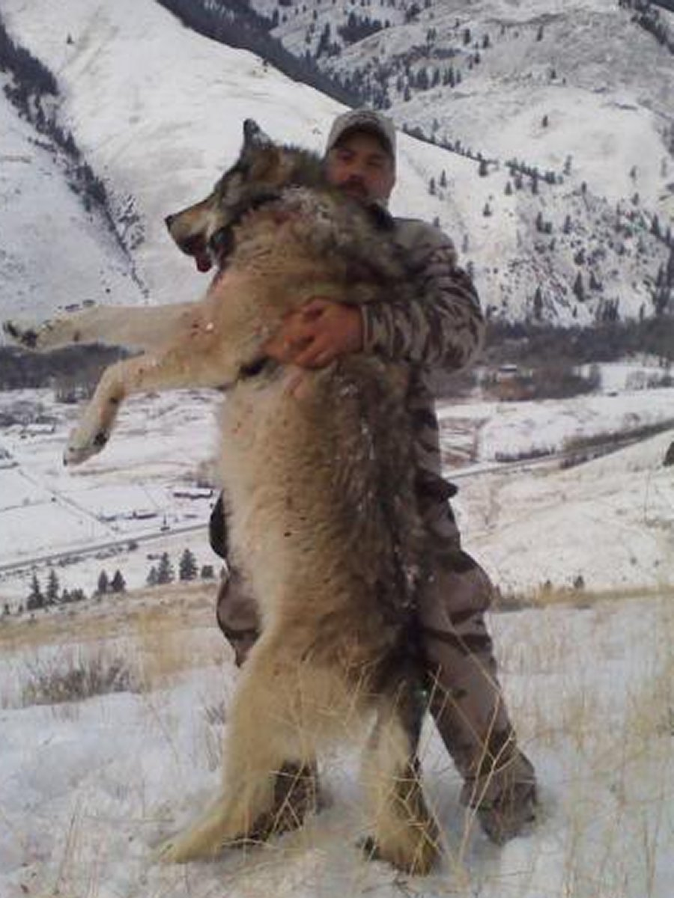 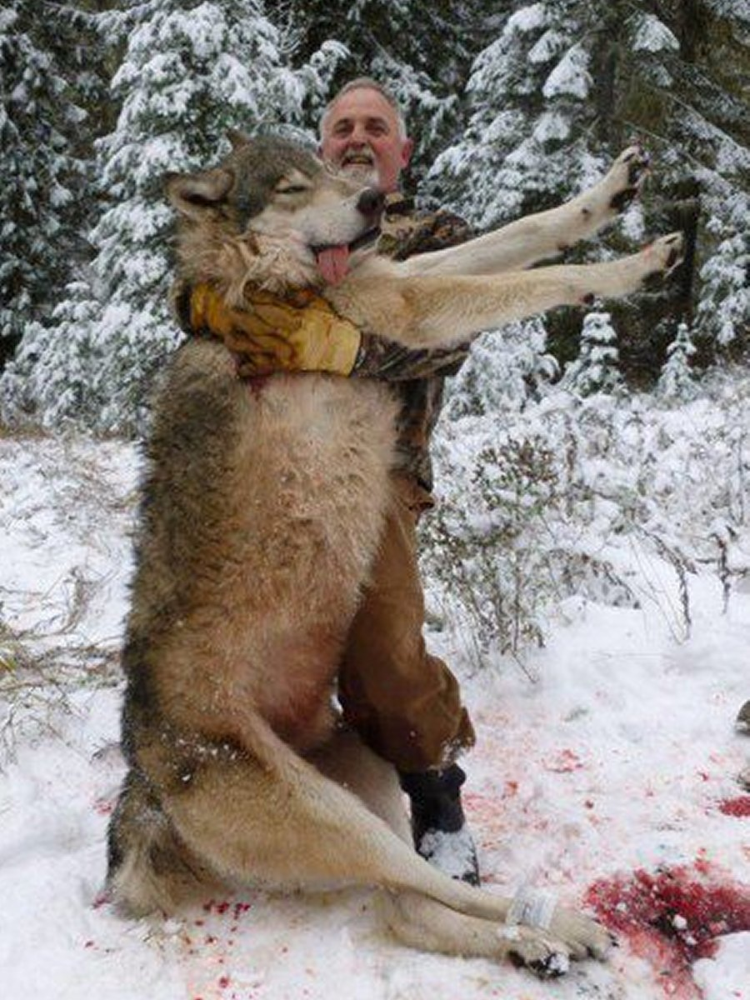
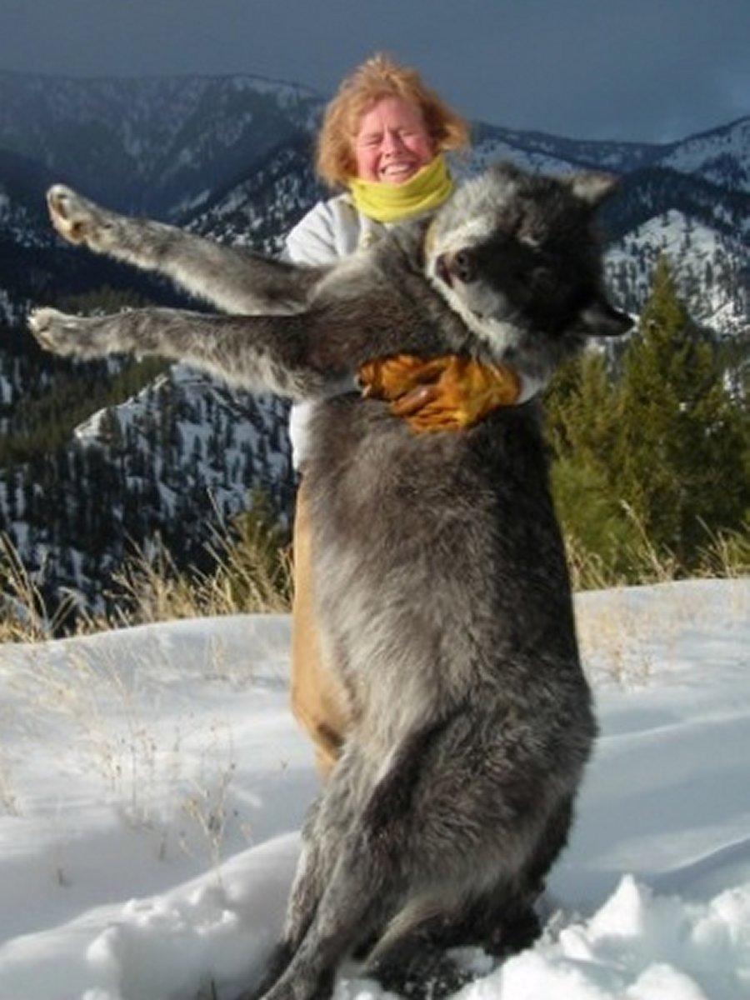 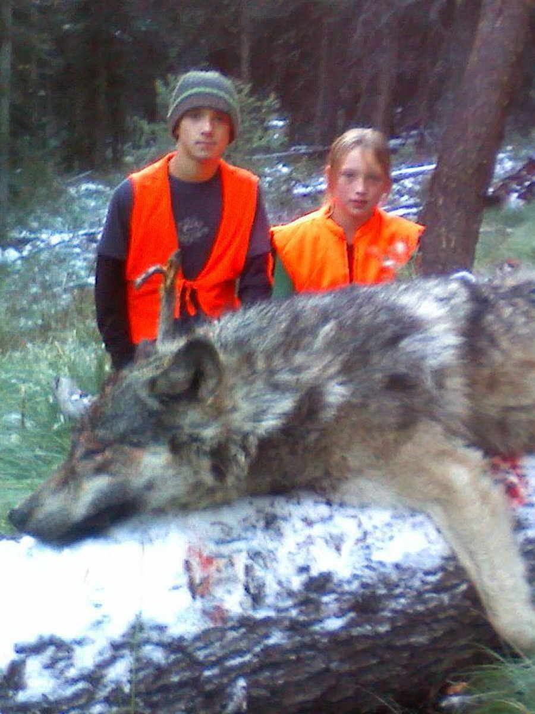
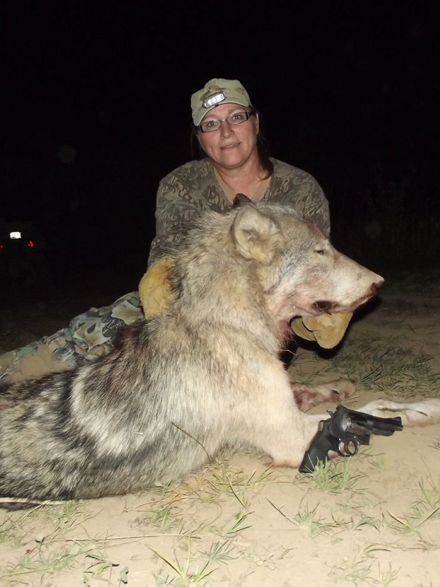 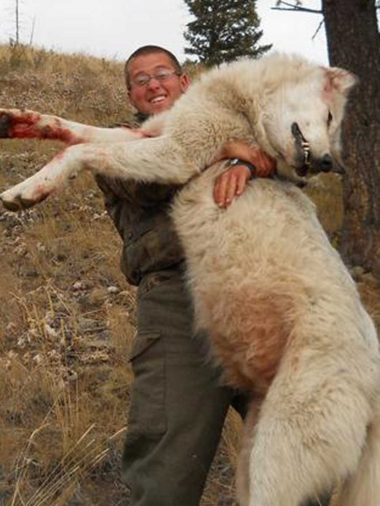
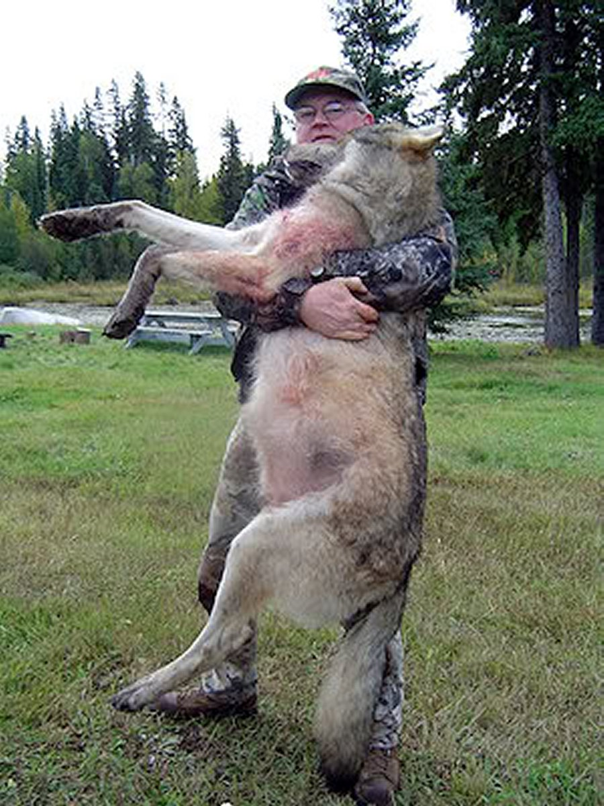 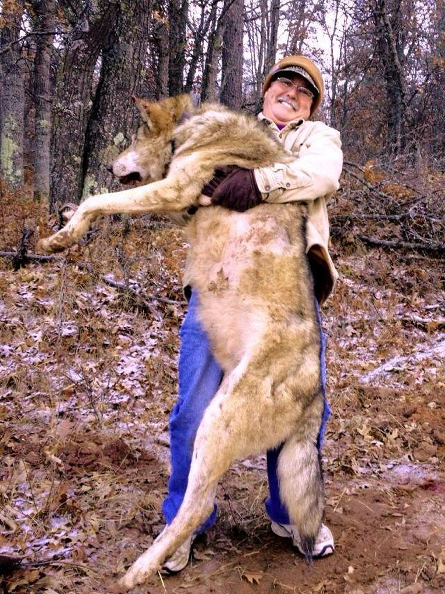
Now those are BIG wolves...and dangerous too. There are large packs of them in the mountains. One pack, that ranges 50-100 miles from where I sit writing this looks like this:
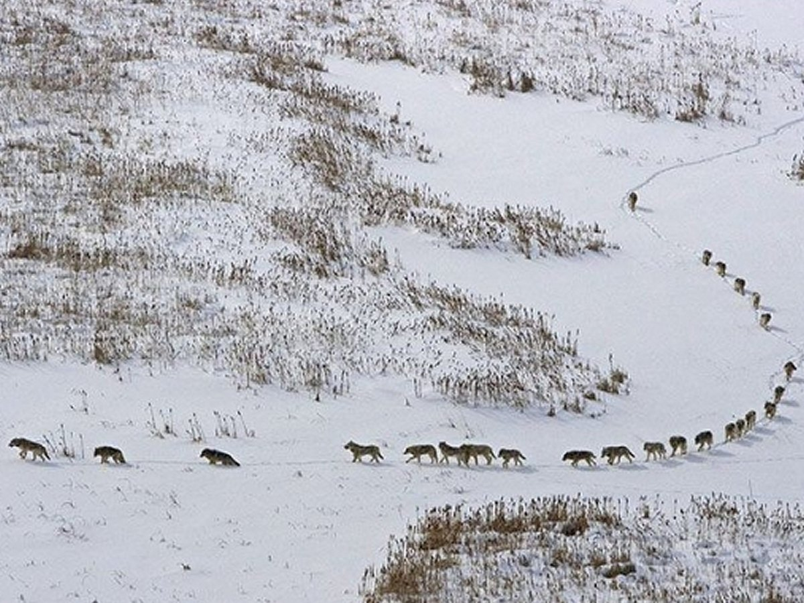
The damage these animals do is significant. In addition to depleting dear and elk herds, they cause significant damage to livestcok like cows, sheep, and even domestic pets who are unlucky enough to run across their path, are be targeted, hunted, and killed by them:
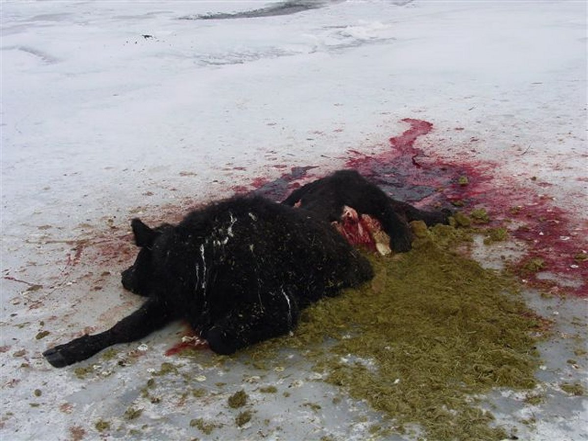 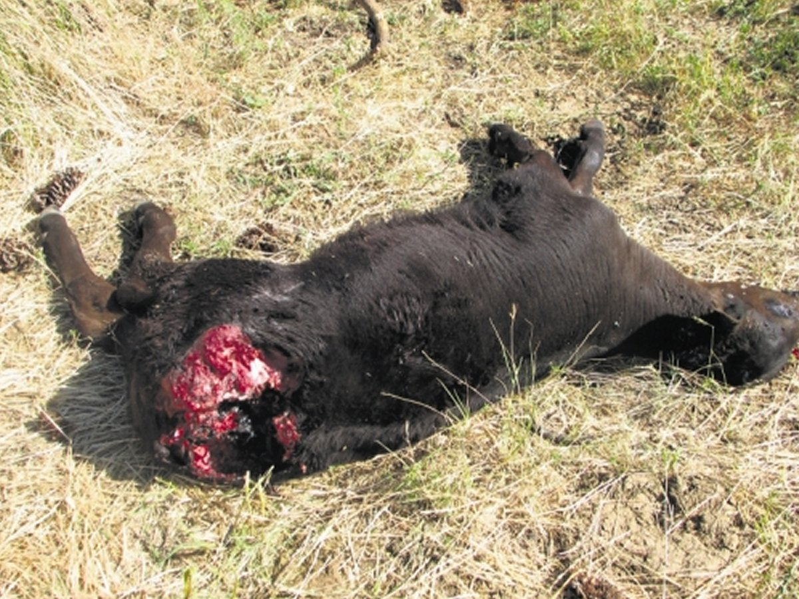
 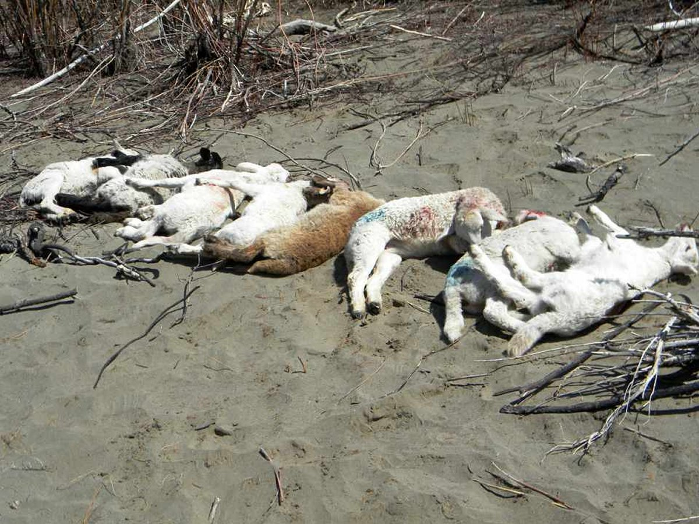
 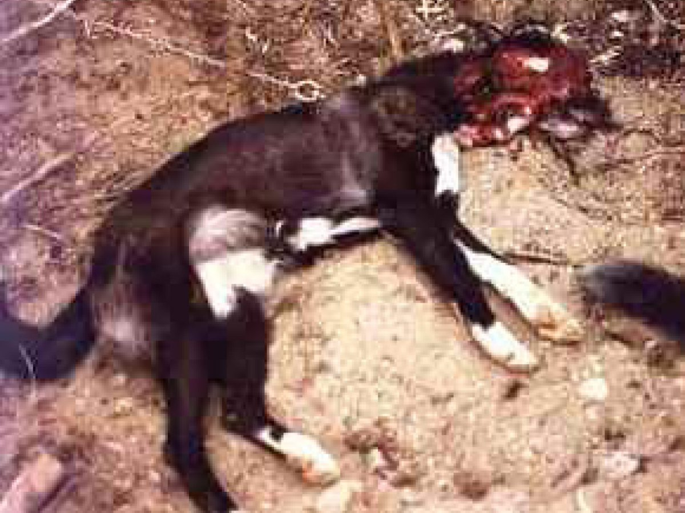
The sad thing is, these viscous animals are absolute killing machines. Much of the time, they just kill their prey and leave them there, not even eating what they kill.
Here's a quote from a local outfitter, and a bow hunter from September 2011.
From the outfitter:
"Took a group of out-of-state elk archery hunters from the Great Lakes region last week. They ended up calling in a pack of 17 wolves by elk cow calling. None of the hunters had a sidearm or wolf tag and it was a very traumatic experience. The wolves surrounded us. All of those hunters went home early, very disturbed claiming that these wolves are very different from the Great Lakes wolves. These Idaho wolves actually “hunt” you, and were not afraid! "
Now from the Idaho bow hunter:
"This wolf came running toward Rene last night to attack her. She had to drop her bow & pull her pistol. She shot it in the head about 10 feet from her. She had to shoot it a couple more times to actually kill it. Crazy! This – not even a week after Shane’s dogs were killed by wolves." (The picture above, of the woman holding the wolf with the revolver next to its front paws comes from this speciric incident).
Bow hunters (or anyone else) out there, take note, and make sure you carry a good handgun (preferably a .44 mag or .357 mag) or rifle when you are out in the foothills or backcountry and be careful!
OTHER DOCUMENTED WOLF ATTACKS IN NORTH AMERICA
I have had a number of people email me regarding this story. claiming that this could not possibly be true since, they say, there are no documented incidents of wolf attacks on humans in North American history. This is a myth. Within a few minutes of searching, one can find literally dozens of reports of attacks. I will list here, eight or nine that are well documented and investigated so that people can understand that it does happen...and it is happening now.
1830 - John James Audubon, of whom the Audubon Society is named, reported an attack involving 2 Negroes. He records that the men were traveling through a part of Kentucky near the Ohio border in winter. Due to the wild animals in the area the men carried axes on their shoulders as a precaution. While traveling through a heavily forested area, they were attacked by a pack of wolves. Using their axes, they attempted to fight off the wolves. Both men were knocked to the ground and severely wounded. One man was killed. The other dropped his axe and escaped up a tree. There he spent the night. The next morning the man climbed down from the tree. The bones of his friend lay scattered on the snow. Three wolves lay dead. He gathered up the axes and returned home with the news of the event. This incident occurred about 1830. (Audubon, J.J., and Bachman, J.; The Quadrupeds of North America, 3 volumes. New York, 1851 - 1854)
1881- George Bird Grinnell investigated several reported wolf attacks on humans. He verified this attack.
This occurrence was in northwestern Colorado. An eighteen-year-old girl went out at dusk to bring in some milk cows. She saw a gray wolf on a hill as she went out for the cows. She shouted at the wolf to scare it away and it did not move. She then threw a stone at it to frighten it away. The animal snarled at her shouting and attacked her when she threw the stone at it. The wolf grabbed the girl by the shoulder, threw her to the ground and bit her severely on the arms and legs. She screamed and her brother, who was nearby and armed with a gun, responded to the scene of the attack and killed the wolf. The wolf was a healthy young animal, barely full grown. Grinnell met this girl and examined her. She carried several scars from the attack. This attack occurred in summer about 1881. (Grinnell, G.B.; Trail and Campfire - Wolves and Wolf Nature, New York, 1897)
1888 - “NEW ROCKFORD, DAK, March 7 - The news has just reached here that a father and son, living several miles northeast of this city, were destroyed by wolves yesterday. The two unfortunate men started to a haystack some ten rods from the house to shovel a path around the stack when they were surrounded by wolves and literally eaten alive. The horror-stricken mother was standing at the window with a babe in her arms, a spectator to the terrible death of her husband and son, but was unable to aid them. After they had devoured every flesh from the bones of the men, the denizens of the forest attacked the house, but retired to the hills in a short time. Investigation found nothing but the bones of the husband and son. The family name was Olson. Wolves are more numerous and dangerous now than ever before known in North Dakota." (Saint Paul Daily Globe, March 8, 1888}
1942 - In 1942, Michael Dusiak, section foreman for the Canadian Pacific Railway, was attacked by a wolf while patrolling a section of track on a speeder (small 4-wheeled open railroad car). Dusiak relates, "It happened so fast and as it was still very dark, I thought an engine had hit me first. After getting up from out of the snow very quickly, I saw the wolf which was about fifty feet away from me and it was coming towards me, I grabbed the two axes (tools on the speeder), one in each hand and hit the wolf as he jumped at me right in the belly and in doing so lost one axe. Then the wolf started to circle me and got so close to me at times that I hit him with the head of the axe and it was only the wielding of the axe that kept him from me. All this time he was growling and gnashing his teeth. Then he would stop circling me and jump at me and I would hit him with the head of the axe. This happened five times and he kept edging me closer to the woods which was about 70 feet away. We fought this way for about fifteen minutes and I fought to stay out in the open close to the track. I hit him quite often as he came at me very fast and quick and I was trying to hit him a solid blow in the head for I knew if once he got me down it would be my finish. Then in the course of the fight he got me over onto the north side of the track and we fought there for about another ten minutes. Then a west bound train came along travelling about thirty miles an hour and stopped about half a train length west of us and backed up to where we were fighting. The engineer, fireman and brakeman came off the engine armed with picks and other tools, and killed the wolf."
It should be noted that this wolf was skinned and inspected by an Investigator Crichton, a Conservation Officer. His assessment was that the animal was a young healthy wolf in good condition although it appeared lean. ("A Record of Timber Wolf Attacking a Man," JOURNAL OF MAMMOLOGY, Vol. 28, No. 3, August 1947)
1996 - In August, 1996, the Delventhal family of Pittsburgh, Pennsylvania, were spending a nine-day family vacation in the Canadian, Algonquin Park and joined a group of Scouts in "howling" at the wolves. They were answered by the howl of a solitary wolf.
That night the Delventhals decided to sleep out under the stars. Young Zachariah was dreaming when he suddenly felt excruciating pain in his face. A lone wolf had bit him in the face and was dragging him from his sleeping bag. Zach screamed and Tracy, Zach's Mother, raced to his side and picked him up, saturating her thermal shirt with blood from Zach's wounds.
The wolf stood menacingly less than a yard away. Tracy yelled at her husband, Thom, who leapt from his sleeping bag and charged the wolf. The wolf retreated and then charged at Tracy and Zach. The charges were repeated. Finally the wolf left. Thom turned a flashlight on 11-year-old Zach and gasped "Oh, my God!" "The boy's face had been ripped open. His nose was crushed. Parts of his mouth and right cheek were torn and dangling. Blood gushed from puncture wounds below his eyes, and the lower part of his right ear was missing." Zach was taken to a hospital in Toronto where a plastic surgeon performed four hours of reconstructive surgery. Zach received more than 80 stitches in his face.
Canadian officials baited the Delventhals' campsite and captured and destroyed a 60-lb wild male wolf. No further attacks have occurred since. (Cook, Kathy; "Night of the Wolf" READER'S DIGEST, July 1997, pp. 114-119.)
2007 - Reported by the Hamilton Spectator in September of 2007: Sault Ste. Marie, Ontario, Canada - A lone wolf that attacked six people, including several young children, in a provincial park over the long weekend has tested negative for rabies, the Algoma Health Unit said yesterday. The wolf, which has been blamed for several separate attacks Monday at the popular Katherine's Cove beach on Lake Superior was shot by park staff.
2010- as reported by MSNBC in March 2010: Chignik Lake, Alaska : In a small southwest Alaska village where natives have forever lived side-by-side with wild animals, the fatal mauling of a schoolteacher by wolves has shattered an uneasy co-existence.
Now, villagers in Chignik Lake say, parents are keeping an extra-close eye on their children and residents make sure to take their rifles and guns when they venture outdoors.
“It’s scary. People are afraid,” said Virginia Aleck, 66, a village elder. “It’s just something we’re just going to have to adjust to, but the sense of trust with a wild animal is totally going to be different.”
The death of 32-year-old Candice Berner stunned not only the village of a few dozen residents but also wildlife officials, who say wolf attacks are very, very rare — and fatal attacks, even more so.
Officials say Berner, a special education teacher who moved to Alaska last summer, was set on by at least two wolves while out for a late-afternoon jog on a road outside Chignik Lake, a fishing village on the Alaska Peninsula, about 475 miles southwest of Anchorage.
On Monday, state biologists tracked and shot two of the wolves that they believe were responsible.
“Based on statements of eyewitness observers, observations made at the location of Candice Berner's death, physical characteristics of the two wolves killed, and the proximity of the two wolves to the location of Candice Berner's death, I conclude that it is highly likely that these wolves killed Candice Berner,” state Fish and Game biologist Lem Butler said.
2011 - The events reported in Idaho here on this web site.
AMERICA AT THE CROSSROADS OF HISTORY
OBAMA'S DISASTEROUS LIST OF FIRSTS
THE PROGRESSIVE/LIBERAL TRAIN WRECK
PRISM SURVEILLANCE AND THE NSA
WALKING AL QUIDA IN BENGHAZI
FAST AND FURIOUS: MURDERGATE
|